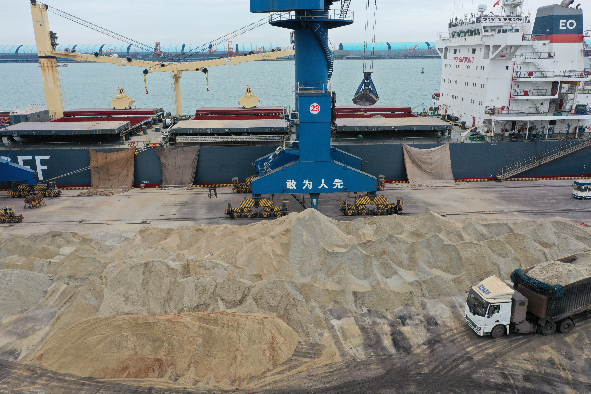

Why a New Self-Discharging Cement Carrier Matters for Shortsea Cement Trade
Eureka Shipping’s new self-discharging cement carrier Jorvik signals that shortsea cement trade increasingly rewards discharge flexibility, faster port turnaround and service to terminals with limited infrastructure.
一艘新型自卸水泥船，为何值得短海水泥贸易关注
Eureka Shipping 新接收的自卸式水泥船 Jorvik 释放了一个明确信号：短海水泥贸易越来越奖励卸货灵活性、更快周转，以及对基础设施有限港口的服务能力。

One of the cleaner shipping signals from mid-June came from northern Europe, where Eureka Shipping took delivery of Jorvik, a new self-discharging cement carrier built for shortsea routes. The vessel is not a headline mega-ship. What makes it relevant is the operating logic behind it: faster turnarounds, cargo handling built into the vessel itself, and the ability to serve ports that do not have strong terminal discharge infrastructure.

1. A self-discharging cement vessel solves a port problem, not just a shipping problem
According to the vessel review, Jorvik can load up to 1,000 tonnes per hour and pneumatically discharge up to 250 tonnes per hour. That matters because the commercial bottleneck in regional cement trade is often not only ocean freight. It is whether cargo can be received efficiently at destination. A self-discharging ship reduces dependence on shore-side equipment and makes more ports commercially usable.
For sellers and buyers, that changes route economics. A cargo can remain attractive even when the destination terminal is modest, because the ship brings part of the handling capability with it. In practical terms, service flexibility becomes part of the product offer.
2. The signal is really about repeatable shortsea service and smaller-lot discipline
The new vessel is the final ship in a series built for Eureka Shipping and the company's tenth overall self-unloading cement carrier. That is what makes the story stronger than a one-off launch. It suggests a fleet strategy built around repeatable regional service. In other words, some cement routes are being optimized not for the biggest shipment, but for dependable, frequent and infrastructure-tolerant delivery.
This is useful for reading broader trade behavior. As buyers become more selective, supply advantages may come from match-fit logistics: the right ship type, the right discharge method and the right cargo size for the receiving market. That is especially true where import demand is steady but terminal conditions vary port by port.

3. What this means for cement, clinker and SCM exporters
For bulk-material exporters, the takeaway is not that every market needs a self-discharging ship. The bigger lesson is that logistics optionality is becoming more valuable. If a supplier can align cargo form, documentation, port readiness and discharge method more precisely, it can open more reachable demand pockets and reduce friction at destination.
Takeaway: Jorvik shows that shortsea cement trade is increasingly a service-design business. Vessel size still matters, but the stronger edge may come from faster turnaround, discharge independence and the ability to fit real port conditions rather than ideal ones.
6 月中旬，一个很值得关注的航运信号来自北欧：Eureka Shipping 接收了新船 Jorvik，这是一艘面向短海航线的自卸式水泥运输船。它不是那种靠“大吨位 headline”吸引注意力的船，真正值得看的是它背后的运营逻辑：更快的港口周转、自带货物处理能力，以及能够服务那些卸货基础设施并不强的港口。
1. 自卸式水泥船解决的，不只是“航运问题”，更是“港口问题”
从船舶资料看，Jorvik 的装货能力可达每小时 1,000 吨，气力卸货能力可达每小时 250 吨。这个细节很重要，因为区域性水泥贸易的瓶颈，很多时候并不只是海运费本身，而是目的港能不能高效把货接下来。自卸船降低了对岸上卸货设备的依赖，让更多港口变得“可商业服务”。
对买卖双方来说，这会直接改变航线经济性。即便目的港终端条件一般，只要船本身带来一部分处理能力，货物依然可能具备吸引力。换句话说，服务灵活性正在变成产品之外的一部分供货能力。
2. 这条信号真正强调的是：可重复的短海服务能力，以及中小批量交付纪律
这艘新船并不是孤立项目。它是 Eureka Shipping 该系列中的最后一艘，也是公司第 10 艘自卸式水泥船。正因为如此，这件事比一次性的“新船发布”更有意义。它说明有些水泥航线正在被系统性优化，目标不是单次最大装载量，而是更稳定、更频繁、且对终端基础设施要求更低的区域配送能力。
这对理解更广泛的贸易行为也有帮助。随着买方越来越挑剔，供应优势可能更多来自“物流匹配度”：用对船型、用对卸货方式、用对适合目的市场的货量结构。尤其是在进口需求稳定、但不同港口条件差异很大的市场，这种能力会越来越重要。
3. 这对水泥、熟料和 SCM 出口商意味着什么
对大宗建材出口商来说，重点并不是每个市场都需要自卸船。更重要的启发是：物流可选项本身正在变得更值钱。如果供应方能把货物形态、单证、港口准备度和卸货方式更精准地匹配起来，就有机会打开更多“原本不够顺手”的需求口袋，并减少目的港摩擦成本。
结论：Jorvik 说明，短海水泥贸易正在越来越像一门“服务设计生意”。船大当然重要，但更强的竞争边可能来自更快周转、更少依赖岸基设备，以及对真实港口条件的适配能力，而不是只适配理想条件。
Explore products or discuss your inquiry.
If this logistics signal matters to your sourcing plan, you can review our product pages or contact us with quantity, target specification, loading method and discharge requirements.
Request a quote